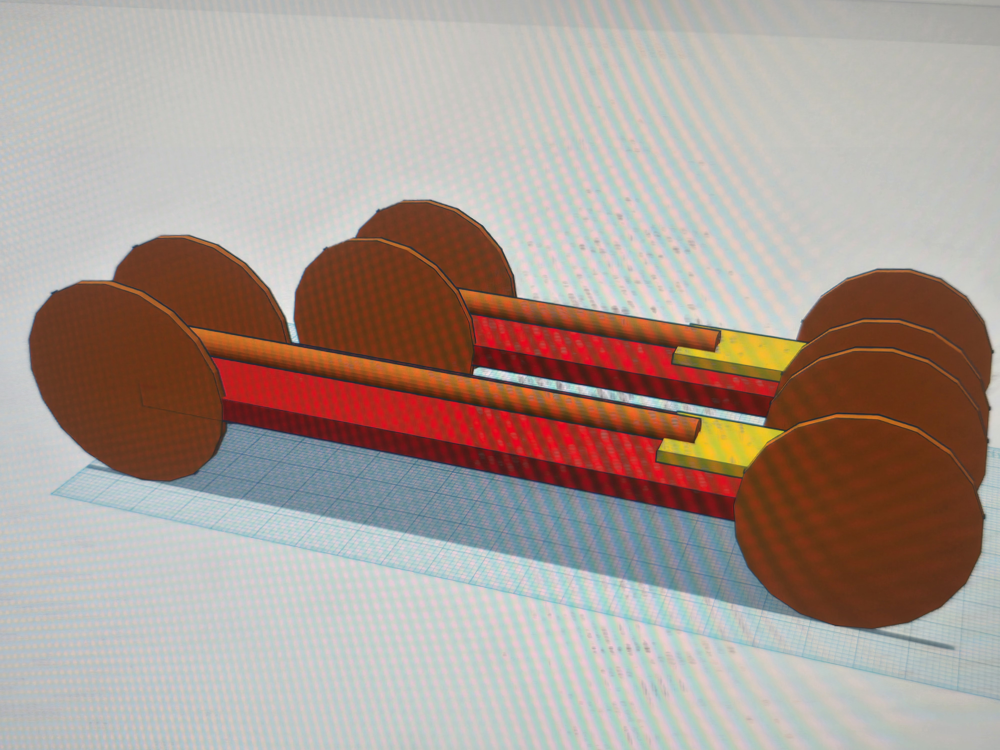

1/26/24 - this week we started a mouse trap car project. my dezin is vary simpel and it is based on a few videos i whached. next week i want to finish the cad.


2/5/24 - last week we started our mouse trap car this week we want to start bilding our car.


2/13/24 - this week we tested our car it work vary well it went over 160ft we got the top place. we dont plan to change enithing on the car.


2/26/24 - our car did grate we got 1st the distance of car 1 is 65ft the distance of car 2 is 160ft. the difrens of the cars is the chasy is 1.5 times longer and the rod is 2 times longer. with the longer rod it alows the car to go farther. if i were to make a 3rd car i would makw the chachy the same lagth of car 1 and the rod 3 times the origanal lagth.


3/4/24 - this week we are doing a egg drop chaling our aproch is to have 2 big parachotes and a box full of coton than 2 bloones on the botom. the wekest part is the box braking but we hop it dosint brake open.


3/13/24 - the egg drop went grate the egg servived the drop. for spring brake i dont have much pland i onle hove a move planed with my frends and 6 flags with mt cousins.


4/5/24 - in the past 2 weeks we bilt a boat to travel 500 cm we faild vary bad we tarveld 15 cm we could have made it shorter
4/15/24 - last week we started on the boat project we finisth the can we plan to start bilding the boat tommoro but so far evry thing is going good.